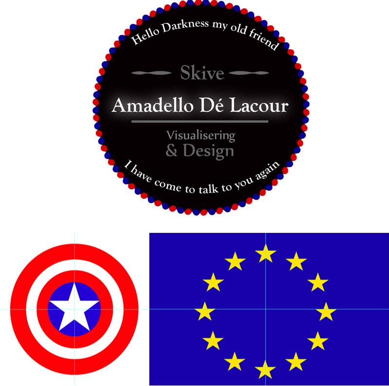

Illustrator

Illustrator er en vector editor, og man vil bruge programmet til at lave logos, maskotter, ikoner, mm.
Vi lærte at bruge indesign ved at lave nogle forskellige opgaver, der var simple, og derfra blev sværer at uddføre.
Logo
Vi skulle blandt andet lave et logo / klistermærke, der beskrev vi var multimedie designer og hvor vi var fra, samt tilsætte noget ekstra text, og style det.
Captain America
Captain Americas skjold I illustrator, er lavet med cirkler og stjerner.
Dette var vores første opgave, og den gik ud på at bruge centrering af objekter.
Det europæiske flag
Lavet med blend af to stjerne, så vi kunne få flere stjerne, der ændrede sig efter den orginale stjerne.
Derefter lavede vi en cirkel, der skulle være disse stjerners nye spine (en linje de skulle følge) så vi kunne sætte stjernerne op.
Måder at gemme på:
Raster Files:
Jpg og Png er begge raster files og er også kendt som bitmap files, de er begge opbygget af pixels.
Filer som disse, når de bliver ændret i størrelsen, mister en del informationer, da det er komprimerede filer.
Vector Files:
Disse filer er baseret på linjer og ikke pixels. Dette betyder man kan ændre i størrelsen af f.eks. et billede, uden det vil påvirke kvaliteten af billedet, da denne fil rendere filen om, når der bliver ændret i størrelsen. AI og SVG ( scale på vector graphics), er en måde at gemme denne fil på.